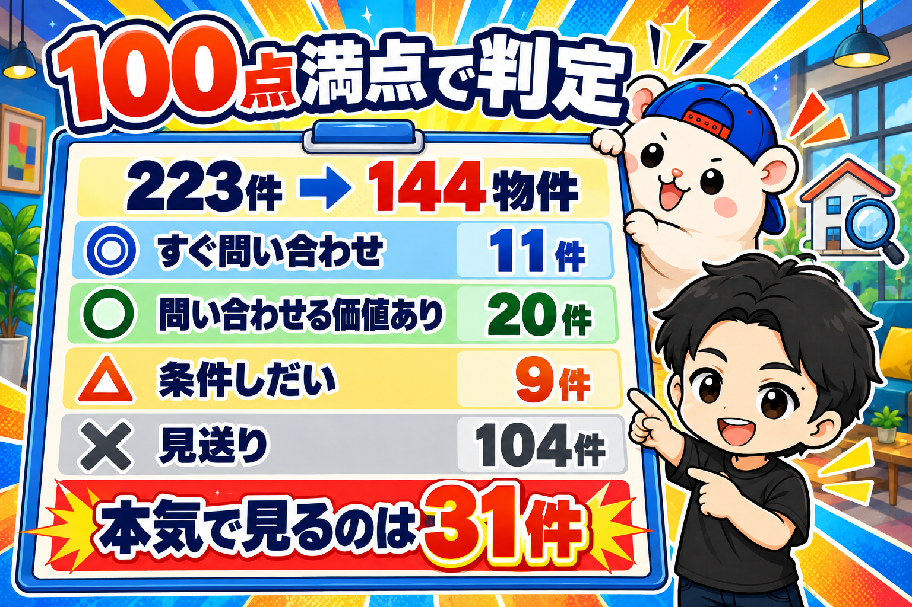
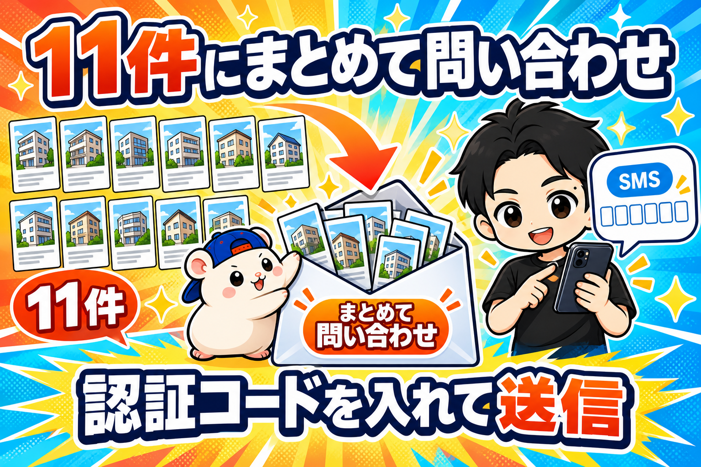

結論、11件の優良物件が見つかりました。
ぼくがやったのは、スマホに届いた認証コードをコピペだけ。
↓流れはこんな感じ。
1, 全国の駅から候補の駅を選ぶ
2, 不動産サイトに検索条件を保存
3, 出てきた物件を採点（事前に判断基準をインプット）
4, 物件をランク付け
5, そのまま自動で問い合わせ
5年間、毎朝手でやっていた作業です。
それが5分で終わりました。
今日はその手順を、そのまま書きます。
物件探しは「毎日見る」しかなかった
レンタルスペースの物件探しに、近道はありません。
ぼくのやり方はずっと同じでした。
不動産サイトに検索条件を保存して、毎朝、新着だけを見る。
歯みがきと同じで、習慣にして5年。
地味です。
でも、この地味な作業のくり返しでしか、
いい物件には出会えませんでした。
問題は、見る範囲を広げられないことです。
都内の住宅街の駅だけで手一杯。
日本全国に広げたら、目が足りません。
そこで、6店舗目のダンススタジオを探すのを機に、
AIに全部任せてみることにしました。
手順1: 全8,743駅を、AIに採点させる
最初にやったのは「どの駅に出すか」です。
ダンススタジオに向く駅の型は、5年でだいたい分かっています。
項目別に、条件を挙げて、それを全国8,743駅ぶん、AIに一気に点数をつけさせました。
自分の感覚と数字が合っていたので、そのまま採用しました。
結果、既存店と同じ型の駅があるのは10府県だけでした。
手順2: 検索条件を保存させる
次は不動産サイトです。
検索条件はいつもと同じ。
いくつか壁がありました。
こういう「サイトの癖」は、AIが実際に画面を操作して見つけてくれました。
最終的に、4県ぶんで12本の検索条件を保存。
その時点で、条件に当たる物件は223件ありました。
手順3: 223件を、判定ツールで採点させる

223件。
同じ部屋を何社もの仲介が載せているので、まとめると144物件です。
これを、自作の物件判定ツールに通しました。
100点満点で、こう配点しています。
結果は、こうでした。
- ◎ すぐ問い合わせ: 11件
- ○ 問い合わせる価値あり: 20件
- △ 条件しだい: 9件
- ✕ 見送り: 104件
見送りの理由の1位は「家賃が基準を超える」で80件。
2位は「スケルトン」で47件。
つまり、144件のうち、本気で見るべきは31件だけ。
毎朝これを目で選別していたと思うと、ちょっと気が遠くなります。
手順4: 11件に、まとめて問い合わせる

ここがいちばん驚いたところです。
◎の11件を、AIがお気に入りに登録して、
不動産サイトの「まとめて問い合わせ」で1つのフォームにしました。
問い合わせの文章は、5年使っている定型文です。
名前、メール、電話番号。
ぜんぶAIが入れて、確認画面まで進めてくれました。
最後に、スマホにSMSで認証コードが届きます。
それを入れて、送信ボタンを押す。
ぼくの仕事は、これだけでした。
11社に、問い合わせが飛びました。
AIに任せてわかったこと
AIなら数十駅を、同じ基準で毎日見られます。
基準がぶれないので、見落としもありません。
一方で、変わらないこともあります。
判定ツールが見ているのは、サイトに載っている数字だけです。
上下階や近隣の状況。
壁の厚さ、設備の状況、汚れや匂い。
これは、内見して、自分の目で確かめるしかありません。
探すのはAI。決めるのは自分。
分担が、はっきりしました。
まとめ
返事が来たら、内見です。
ここからは、ぼくの足の仕事です。
結果はまたこのブログで書きます。
▼この物件の探し方は、ぜんぶ教材にまとめてあります
5年で23部屋を出したレンタルスペース経営の手順書です。
物件の見つけ方から、内装、集客、値付けまで書いてあります。
『レンタルスペース経営の教科書』(公式サイト最安 ¥28,800)
https://rental-space.net/kyokasho/
※先行3部限定の価格です。以降、2,000円ずつ値上げします(定価¥49,800まで)。
▼もう1つの副業、AI社員だけのeBay輸出店の実録🐹
https://note.com/cham_ebay
▼ブログ(レンスペ×eBay、全記事まとめ)
https://rental-space.net